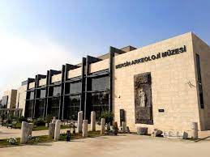
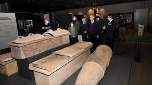

-MERSİN ARKEOLOJİ MÜZESİ-
Mersin Arkeoloji Müzesi - Mersin
Çağdaş müzecilik faaliyetlerinin yürütülmesine imkân veren fiziki şartların sağlandığı Mersin Arkeoloji Müzesi’nde eserlerin sergileneceği salonların yanı sıra geçici sergi salonları, çocuklar için arkeopark uygulama alanları, kütüphane, hediyelik eşya satış yeri, kafeterya gibi sosyal alanlar da yer almaktadır.
Müzede toplam 1435 adet eser sergilenmektedir. Ziyaretçiler, giriş katında bulunan zaman tünelinde tarihe bir yolculuk yapma, kronolojik sergi salonunda uygarlıkların her alanda nasıl geliştiği ve neler yapabildiklerini izleme, ölü kültü alanında farklı kültürlerde ölü gömme geleneklerini öğrenme, etnografik salonda insanların geçmişten günümüze kullandığı etnografik eserlerin yanında Yumuktepe Höyüğü yakınında bulunan Huğ Evi’nin replikasını görme fırsatı bulmaktadır.
Birinci katta sergilenen sikkeler ile aynı salonda 9 bin yıldır kesintisiz yerleşim gören Yumuktepe Höyüğü’nün canlandırması ve kazıdan çıkan eserleri uygarlıklar hakkında bilgi vermektedir. Ziyaretçiler, Mezitli İlçesi'nde bulunan ve M.Ö. 3'üncü bin yıldan M.S. 6'ncı yüzyılın sonlarına kadar iskân gören Soli-Pompeipolis Antik Kenti ve Erdemli İlçesi'ndeki M.Ö. 4'ncü yüzyıldan günümüze kadar yerleşim gören ve Antik Dönem’de zeytinyağı ticareti ile ünlenen Elaiussa-Sebaste Antik Kenti’nin arkeolojik zenginliğine tanık olmaktadır.


 (5).jpg)